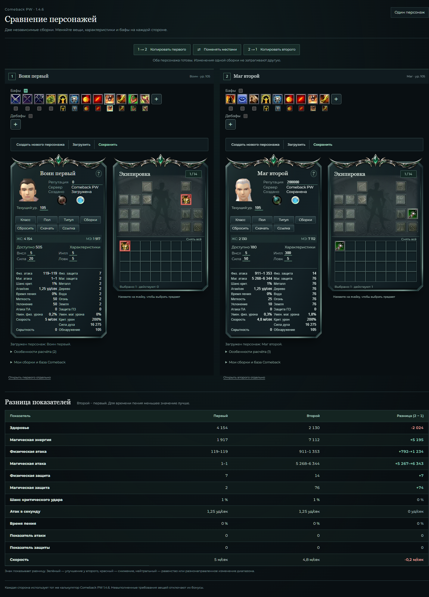
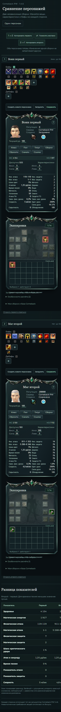
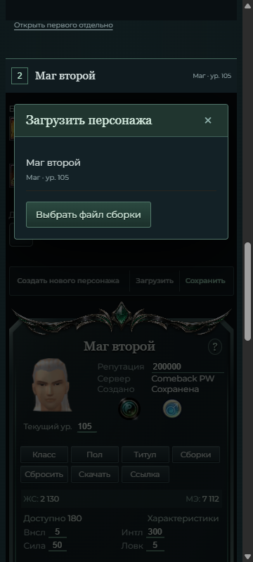

English Encyclopedia · формат отчётов · 3 ноября 2026
Сравнение двух персонажей
Два полных калькулятора Comeback PW 1.4.6 рядом: независимые характеристики, вещи и бафы, копирование сборок и таблица разницы.
142 / 142тестов в запущенной копии
141 / 141тестов в Git-репозитории
21подтверждённых областей
2независимых калькулятора
CSV с теми же результатами · Описание сравнения
Обе стороны используют существующий калькулятор. Изменение одной сборки не меняет другую. Красные вещи остаются выбранными, но их бонусы включаются только после выполнения требований.
PASS — есть результат фактически выполненной проверки. Все перечисленные проверки завершены. Исходные сценарии выполнены на 8001; перенос, финальные снимки, мобильные размеры, сохранения и чистая консоль повторно проверены в пользовательской копии на 8000.
Результаты
| Область | Статус | Важность | Что проверено | Ограничения |
|---|---|---|---|---|
| Два полных калькулятора | PASS | Высокая | На порту 8001 страница сравнения открывает два независимых экземпляра существующего калькулятора с классом, характеристиками, вещами и бафами. | Оба экземпляра используют тот же движок; формулы и данные не дублируются. |
| Переход из текущей сборки | PASS | Высокая | После нажатия «Сравнить» имя и Сила 20 текущего персонажа сохранились слева; справа появился новый персонаж. | Начальный переход и возврат к одному персонажу проверены отдельно; текущая сборка сохраняется. |
| Независимость правого персонажа | PASS | Высокая | Справа выбран Маг с Силой 50 и Интеллектом 300. Меч 12647 при недостатке репутации оставил магическую атаку 420–420; репутация 200000 включила 5268–6344. Левая сборка не изменилась. | Условная активация бонусов экипировки сохраняется на каждой стороне. |
| Независимость левого персонажа | PASS | Высокая | Выбор красной брони 9345 слева не изменил показатели левого персонажа; правый персонаж также не изменился. | Невыполненные требования вещи отключают её бонусы, но не запрещают выбор. |
| Раздельные бафы | PASS | Высокая | Слева баф 6 изменил HP с 3195 до 4154. HP правого персонажа остались прежними. | Результат относится к проверенному состоянию бафа; чужая сторона не получает эффект. |
| Копирование 1 → 2 | PASS | Высокая | Копирование перенесло все выбранные атрибуты, экипировку и бафы. Все 12 разниц показателей стали нулевыми. | Копирование заменяет сборку получателя; последующие изменения снова независимы. |
| Копирование 2 → 1 и обмен | PASS | Высокая | Изменённое только на одной стороне имя сохранилось после копирования обратно. Обмен сборками переставил имена между сторонами. | Проверены действующие элементы управления страницы сравнения. |
| Загрузка на нужную сторону | PASS | Высокая | Правый калькулятор загрузил сохранённого Мага; левый персонаж остался прежним. | Общая библиотека сохранений доступна обеим сторонам; загрузка меняет только выбранный калькулятор. |
| Таблица разницы | PASS | Высокая | Показаны 12 метрик, значения обоих персонажей и разница «2 − 1». После копирования равных сборок все разницы равны нулю. | Для времени пения лучше меньшее значение. Цвет дополняет числовой знак. |
| Широкий экран | PASS | Средняя | На ширине 1440 px две полные панели находятся рядом. Финальный снимок character-comparison-desktop.png получен на запущенной пользовательской копии, порт 8000. | Узкие размеры и исправление клиппинга выделены в отдельную проверку. |
| Модальное окно второго персонажа | PASS | Средняя | В пользовательской копии на 8000 при размере 360 × 800 после прокрутки ко второму калькулятору окно «Загрузить» видно целиком: верх 148 px, низ 341 px, слева 20 px, справа 325 px. | Позиционирование учитывает видимую часть внешнего окна, а не всю высоту iframe. |
| Заголовки и маршруты | PASS | Высокая | Четыре теста маршрутов прошли после трёх ожидаемых первоначальных падений. Вложенный /calculator/ разрешён только SAMEORIGIN; обычные страницы сохраняют защиту DENY. | Вложенная версия не предлагает повторный переход к сравнению, рекурсии iframe нет. |
| Готовность и восстановление загрузки | PASS | Высокая | В контролируемом сбое первые два запроса каталога вернули 503, ResizeObserver был отключён. Копирование оставалось недоступным до готовности. После повторной загрузки оба калькулятора восстановились, исходные имя и Сила 31 сохранились. | Две ошибки 503 ожидаемы только в искусственном сценарии отказа; они не смешиваются с чистой консолью обычного прохода. |
| Автоматические проверки репозитория | PASS | Высокая | Полный набор: 56 Python + 85 JavaScript = 141 PASS. Django check: 0 issues. Ruff, проверки синтаксиса app/bridge/page и git diff --check: PASS. Добавлены 4 теста маршрутов и 10 тестов сравнения. | Команды: .\.venv\Scripts\python.exe -m pytest -q; npm.cmd test; .\.venv\Scripts\python.exe manage.py check; .\.venv\Scripts\python.exe -m ruff check .; node --check static/js/app.js; node --check static/js/comparison-bridge.js; node --check static/js/comparison-page.js; git diff --check. Итоги целевых тестов входят в общий набор. |
| Обычная консоль | PASS | Средняя | Финальный обычный проход на фактически запущенном сайте 8000 вернул 0 ошибок и 0 предупреждений JavaScript. | Искусственные ответы 503 учтены отдельно как проверка восстановления. |
| Версия игры и прежние правила | PASS | Высокая | Изменения не затрагивают каталог Comeback 1.4.6, десять классов, ранее согласованные исключения и базовые формулы. Бонусы красных вещей остаются отключёнными. | Это проверка области изменения; полная сверка игрового каталога с клиентом не выполнялась. |
| Узкий экран после исправления | PASS | Средняя | На запущенной копии проверены 360 / 390 / 719 / 720 / 1440 px: внешнего и внутреннего горизонтального переполнения нет. На 360 px ширина iframe и его документа — 329 px, игровая панель — 320 px. | Ранее найденное обрезание 3 px устранено. Мобильные снимки получены после повторной проверки. |
| Возврат к одному персонажу | PASS | Высокая | Переход обратно сохранил текущего левого персонажа: имя, Сила 20, HP 4154 и выбранная броня. | Подтверждено через действие возврата; правая сборка не подменяет левую. |
| Рабочая папка и порт 8000 | PASS | Высокая | Исправление перенесено в F:\PW-Calculator-main; сервер на 8000 перезапущен из этой папки. Изменены 9 файлов приложения, README, два тестовых файла и спецификация — всего 13 файлов. | Прежние четыре файла сохранены в F:\PW_Calc\.cache\comparison-backup-20261103-db4a7e32.zip. Местные обработка ошибки расчёта, текст ошибки ссылки и переключение окна ячейки сохранены; повторная загрузка ссылки теперь входит в общую реализацию. |
| Проверки запущенной копии | PASS | Высокая | В F:\PW-Calculator-main пройдены 85 JavaScript + 57 Python = 142 теста. Django check: 0 issues; проверки синтаксиса JavaScript — PASS. | Команды в этой папке: npm.cmd test; .\.venv\Scripts\python.exe -m pytest -q; .\.venv\Scripts\python.exe manage.py check; node --check static/js/app.js; node --check static/js/comparison-bridge.js; node --check static/js/comparison-page.js. В Git-репозитории отдельно пройдены 85 JS + 56 Python = 141 тест; результаты не суммируются. |
| Повторная загрузка на порту 8000 | PASS | Высокая | Импортированы левый Воин с HP 4154 и Силой 20 и правый Маг с мечом, репутацией 200000 и магической атакой 5268–6344. Справа «Сохранить → новый персонаж → загрузить» восстановило Мага; левый не изменился. | Проверено на пользовательской папке после переноса, отдельно от проверочного сервера 8001. |
Два калькулятора рядом

Телефон и загрузка второго персонажа

